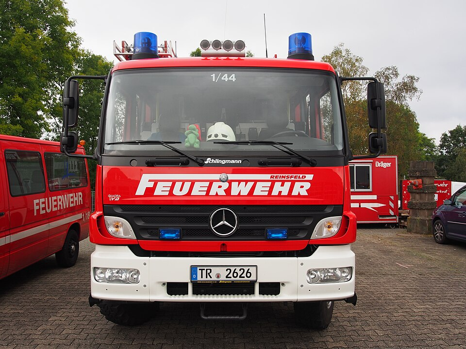

Einheiten-Erfassungsbogen für den Katastrophenschutz Niedersachsen
Die niedersächsischen KatS-Einheiten sind in den KatS-StAN NDS bis auf die Teileinheit genau festgelegt: Fachzüge und der Sanitäts- und Betreuungszug gliedern sich in Gruppen, Trupps, Staffeln und Geräteeinheiten, jede mit eigener Sollstärke und eigenem Funkrufnamen. Dieses kostenlose Online-Tool bringt diese Gliederung als fertige Beispielbögen mit — du lädst, passt an und übergibst per QR-Code, auch ohne Internet.

33 Beispielbögen nach den KatS-StAN NDS
Abgebildet ist je kleinster selbstständiger Teileinheit ein eigener Bogen — von der Führungsgruppe über die Fachmodule Vegetationsbrandbekämpfung und Hochleistungsförderpumpensystem bis zu den Staffeln von Wasserrettung, Sanitätsdienst, Betreuungsdienst und den Geräteeinheiten Hochwasserschutz. Die Träger sind realistisch gestreut — Feuerwehr, DRK, Johanniter, Malteser, ASB und DLRG stellen jeweils eigene Teileinheiten.
- Teileinheit wählen — Stärke, Fahrzeuge und Landkreis-Zuordnung der KatS-StAN sind vorbelegt, du bestätigst statt abzutippen.
- Funkrufnamen nach OPTA-Schema NDS — Rufname, Landkreis-Kennung, Fahrzeug- und Ordnungskennung setzt der Bogen nach dem Erlass des MI zusammen, statt sie von Hand zu bilden.
- Untere KatS-Behörde vermerkt — jeder Beispielbogen trägt bereits den zuständigen Landkreis oder die kreisfreie Stadt.
In der App findest du die Bögen unter „Beispielbögen" → „Katastrophenschutz" → „Niedersachsen". Jeder Bogen ist ein Startpunkt: Standort und tatsächliche Besetzung passt du an und speicherst das Ergebnis als eigene Vorlage.
Kräfteerfassung im Verband
Rücken mehrere Teileinheiten gemeinsam aus, sammelt die Zug- oder Verbandsführung die einzelnen Bögen in der App unter einem Einsatz: Die Stärken werden laufend summiert, der Verband meldet geschlossen weiter — als Sammel-PDF, Datei oder QR-Code. Dieselbe Funktion trägt den Meldekopf am Bereitstellungsraum.
Gemacht für den Ausfall der Infrastruktur
Katastrophenschutz heißt: Es ist mit dem Ausfall von Strom, Mobilfunk und Internet zu rechnen. Die App arbeitet nach dem ersten Aufruf vollständig offline, speichert ausschließlich lokal auf dem Gerät und übergibt Bögen per QR-Code von Bildschirm zu Kamera — ohne Server, ohne Kopplung, ohne Netz.
Häufige Fragen zum Katastrophenschutz Niedersachsen
Passt die Vorlage auch, wenn meine Einheit anders besetzt ist?
Ja. Die KatS-StAN-Vorbelegung ist ein Startpunkt, kein Zwang: Du kannst jedes Feld ändern, Fahrzeuge streichen oder ergänzen, und den angepassten Bogen als eigene Vorlage speichern.
Sind die Vorlagen amtlich?
Nein — sie sind aus den öffentlich zugänglichen KatS-StAN NDS abgeleitet und sorgfältig geprüft, aber kein amtliches Dokument. Maßgeblich bleibt die jeweilige Landesregelung; deshalb kannst du jede Vorbelegung frei anpassen.
Was ist mit anderen Bundesländern?
Weitere Landesvorlagen liegen für Sachsen, Brandenburg, Thüringen, Baden-Württemberg, Rheinland-Pfalz, Mecklenburg-Vorpommern und Hessen bereit — eine Übersicht gibt die Seite Katastrophenschutz der Länder. Fehlt deins, kannst du jeden Bogen frei ausfüllen und selbst als Vorlage speichern.